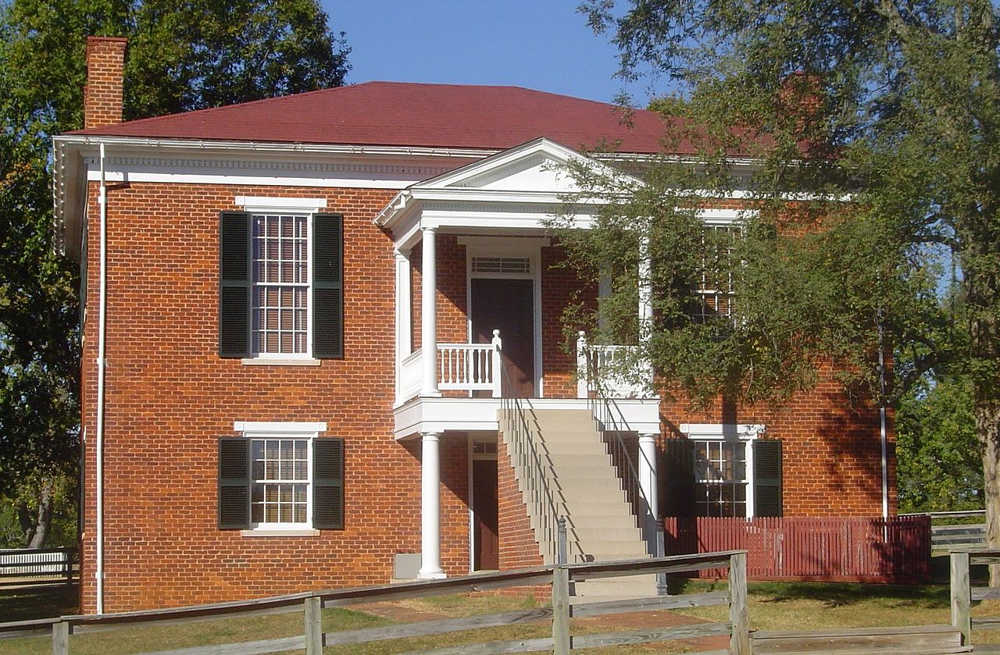
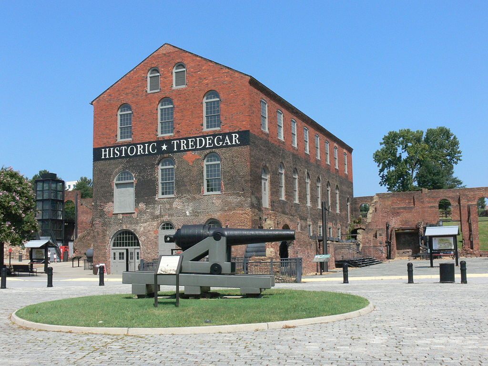
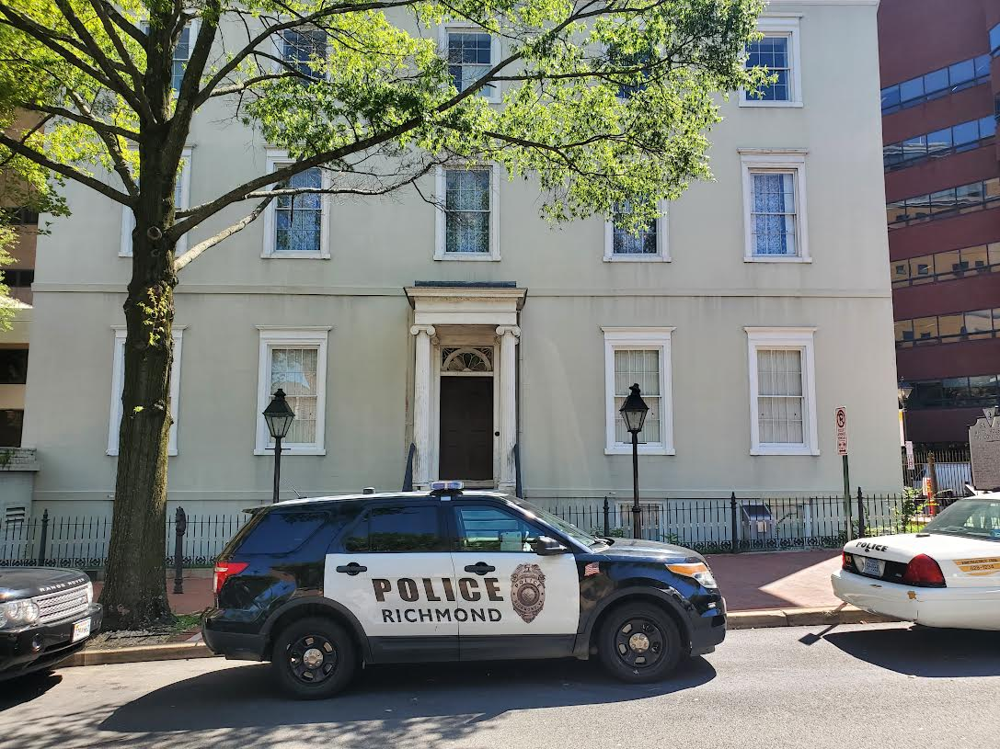
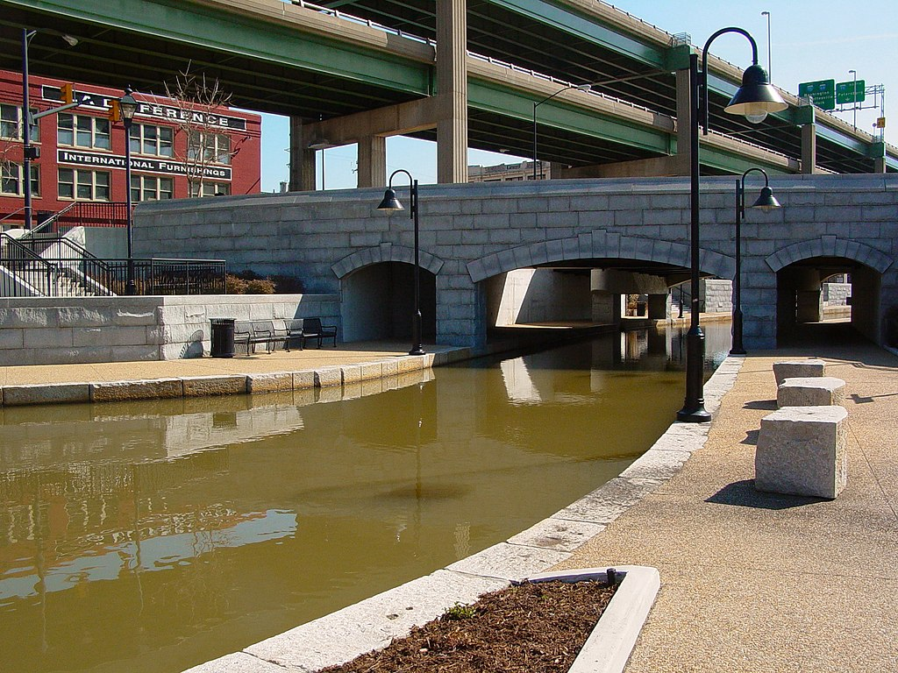
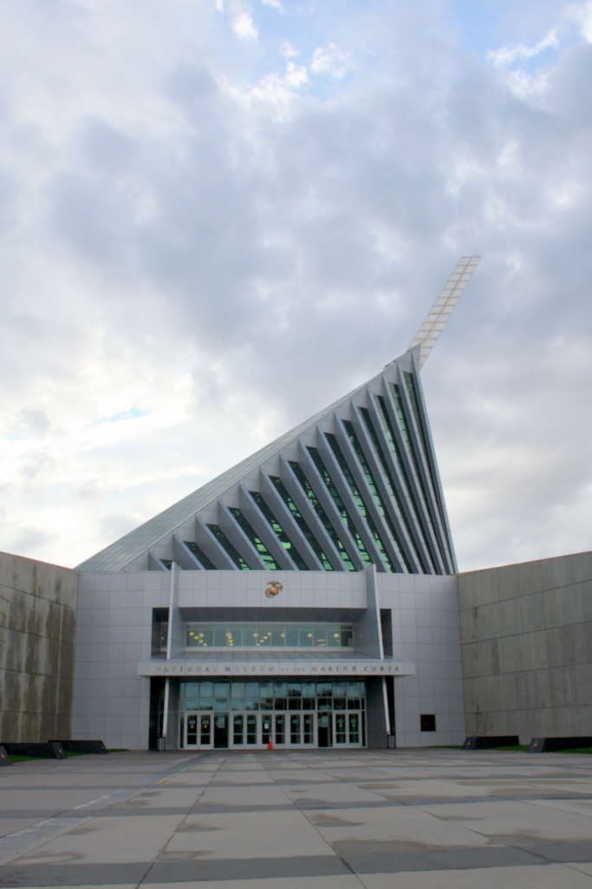
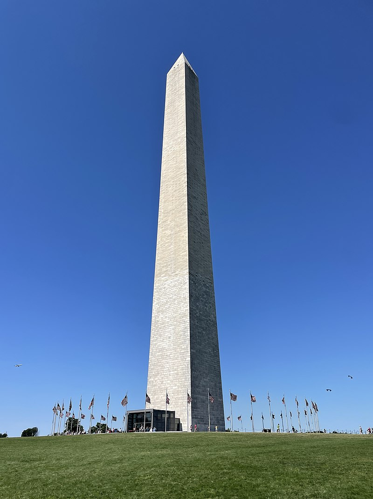
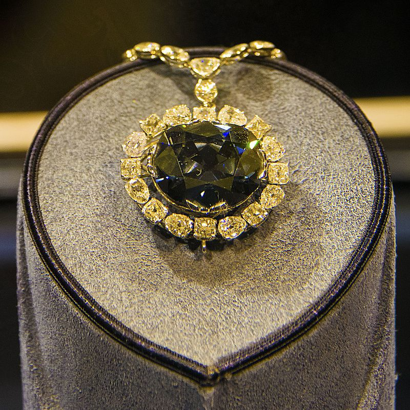
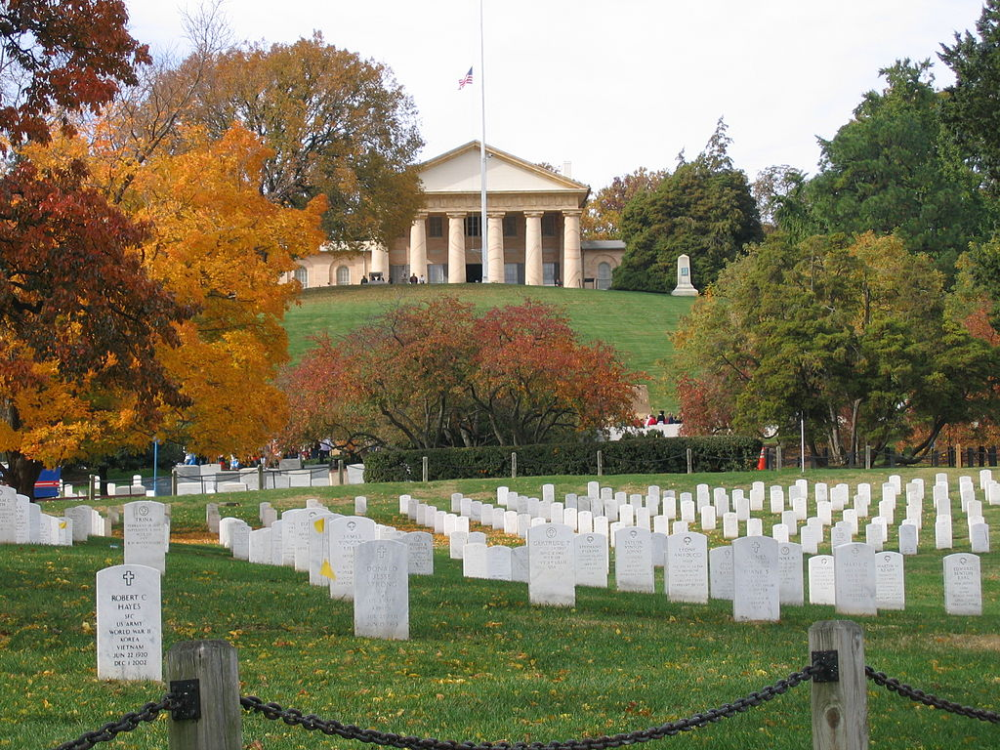
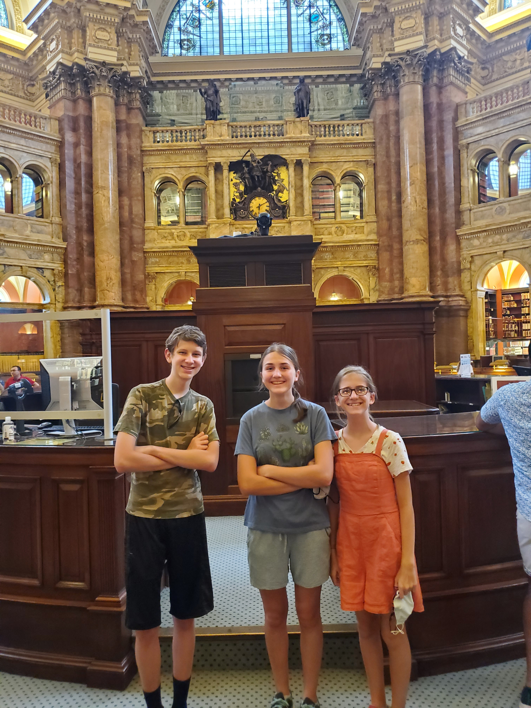

Day 1
Sunday July 10, 2022
We did a lot of driving, but did not stop at any national parks or historical sites. We did Sunday School in the car, and talked about how the Catholic church is not bad, and how our church (Church of Jesus Christ of Latter-Day Saints) would not exist without it. We had dinner at Clark and Lynnea’s house, it was crepes. We played with Aksel, Lenna, and their older brother Torin. We had leftover crepes for breakfast, and then we skedaddled.
Day 2
Monday July 11, 2022
Today was all back roads. It was back roads and farms and little houses with the sticky-outy mailboxes. We also saw multiple signs for the Amish, but we did not see any horses or buggies, to our dismay. We went to Appomattox Courthouse Village, where the Civil war ended.
{kind=link}
They required masks in the museum, and in all the other structures. The village consists of a Courthouse, 3 or 4 “large” houses, multiple slave quarters, a pub, a jail, an general store, and an ice house, and probably a lot more things, but those are the only ones we went to. We learned about a slave named Hannah, who was the only casualty at the signing. A shell was accidentally fired, most likely in celebration, but it blew her arm off and killed her. After that, we went another 2 hours to Richmond. During the drive, Grandpa told us about the 292 day siege of Petersburg, just 90 miles north of Richmond. It starved all the cities around it, because it was a large train hub, and a large part of food and supplies that were sent to Richmond via the James Canal. We had to pay four 70¢ tolls to get to Richmond, all in the span of 10 minutes. When we arrived in Richmond we went to the Tredegar Iron Works Civil War Museum.

{kind=link}
There, we learned about a lot of people on both sides of the war, including Francis Clayton, who was one of many female soldiers. She disguised herself as Frances Clalin, and fought alongside her husband, but there are no records of her husband in the same infantry as her. We watched a short film about the timeline of the civil war, but there were two screens, so it confused us a lot. Historic Tredegar was burned by the confederate army, along with most of Richmond, because they found out that the Union Army was coming. They did not want to give the Union any supplies, so they burned almost everything. After the fires were put out by the Union, they discovered that most of the population was evacuated, but the slaves and the “poor whites” were left behind. When President Lincoln visited Richmond, the slaves and the poor people left behind rushed to him instantly. Admiral David D. Porter described it as this: “No electric wire could have carried the news of the President’s arrival sooner than it was circulated through Richmond. As far as the eye could see the streets were alive…They all wanted to shake hands with Mr. Lincoln or his coat tail or even to kneel down and kiss his boots!”

President Lincoln stayed the night in the CSA Whitehouse, the Davis mansion.
After that, which wasn’t incredibly time intensive (We just took pictures) we checked into the hotel, and walked around historic Richmond.

{kind=link}
We finally found the dock where we would go onto the boat and we waited for a while. Once the boat came, we went on board with 4 other families (3 small, 1 big). The boat tour was very interesting. We learned about Henry “Box” Brown, a slave from Richmond who escaped in a wooden crate. He was in the box for 27 hours and shipped himself to a group of abolitionists in Philadelphia, PA. We also learned about Elizabeth Van Lew, one of the elites in Richmond who was secretly an abolitionist. She would go about the docks, muttering to herself, earning herself the nickname ‘Crazy Bett’ so people would assume she was a crazy woman, but she would be discreetly gathering information about plans from the confederacy. She would meet other spies in a meeting place, an abandoned tobacco shipment building, and give them information to bring to the president and generals of the Union. After reconstruction, Van Lew became increasingly ostracised in Richmond. “No one will walk with us on the street,” she wrote, “no one will go with us anywhere; and it grows worse and worse as the years roll on.” She reportedly persuaded the United States Department of War to give her all of her records, so she could hide the true extent of her espionage from her neighbours.
Day 3
Tuesday July 12, 2022
Today we left Richmond to go to Spotsylvania. It was a two hour drive, but this time we were not completely on back roads. The wilderness campaign, run by the Union, was very bloody with many casualties. The battle of Spotsylvania was actually two battles, but the second one is more famous, as that is the “Bloody Angle” battle. The south built a lot of earthworks, but they were all covered up so we could not see them. We went on a very short walk, in a loop, and went back to the war, to Quantico. It was around 30 mins of driving.
The architecture of the museum was very interesting, as they have a centre pole that goes all the way up, past the roof, that is the same angle as the Iwo Jima flag raising (second flag). The museum was pro-war, as always. Rachel survived the themed rooms, like the cold one (Korean war), the Jungle one (Vietnam), and the Village one (also Vietnam). When we were done, we piled back into the very hot car and drove to D.C.

{kind=link}
We parked at a very sketchy looking parking place that was $25 (in cash), and walked to the Smithsonian Art gallery (east building). A lot of the buildings were under construction, like the Capitol building, Air and Space, both art Galleries, among other smaller projects. Grandpa had to stay behind in the east building to try and get the code for the Vrbo that we were staying at, so it was just me and Rachel, exploring the museum. My favourite exhibit was the Symphony in White, which you can find more about here. After we had explored most of the museum, we went back to Grandpa and made our way to the west building, underground. The west building has more classical paintings, like portraits of presidents and things like that, while the east building has more modern art, like Picasso. The Symphony in White was a temporary exhibit. We had to cut our visit short, because it was nearing five p.m.
We decided to meander our way to the Capitol Reflecting Pool, but it took us longer than necessary, because we were going so slow and it was nearing 100º. We sat there for a while, but as the clock drew nearer to 5:30, we went all the way to the Washington monument, in a cover of clouds.

{kind=link}
Once we made it there, the clouds were starting to darken rapidly, but Grandpa said “They’re moving the opposite direction”. He was very wrong.
We were sitting on one of the benches, watching the ‘faraway’ storm, when suddenly 2 flags got ripped off the poles. That is when I bolted. The door was locked, as it was after 5, so we could not go in the monument, but under the awning was fine for me. Rachel and Grandpa and 25 other tourists joined me when the lightning struck and the thunder was right away. We were under there for what seemed like an eternity. I was next to a screaming French child. About halfway through we were joined by the Andersons. When the thunder subsided, we started to go to the Lincoln memorial, but that is when the second wave of the storm hit. We were soaked! When we finally made it there it was thundering again, so we sheltered in the memorial, away from other people. A couple of teenagers were slipping and sliding on the stairs, so we made our way down very carefully (or at least I did).
We went through the Vietnam memorial relatively quickly, though Michael pointed out every single Michael and “fun” name on the wall. We would be walking along and hear “Another one!” and “This dude was named Fitzgerald!. We made our way to Korea, and then back to the car. We walked 10 miles that day! In the car, we struggled to fit everyone, as there were only 5 seats, but we had six people. Diana, Michael, Rachel, and I squeezed into the back seat, our shoes squelching all the way to the Vrbo. We had pizza for dinner, and then Michael, Rachel, and I played Mexican Train until 11.
Day 4
Wednesday July 13, 2022
We went to the National Archives! It was very interesting to see the founding documents, and the room where they were was very elegant. In the movie “National Treasure”, the Rotunda was very bright, when in reality it is quite dim, so as to not ruin the old paper.
I shoved an entire jumbo pretzel we had gotten earlier from a food truck (I still have the songs stuck in my head) into my mouth before we went through security, so I looked a little bit like a chipmunk when we were by the Magna Carta, but I was able to swallow very soon after.
{kind=link}
After the Archives we went to “America’s Attic” aka the Museum of American History. Sadly the Ruby Slippers and Muppets were not on display (Construction. Argh!), but we heard a quartet play on 400 year old instruments, so I guess that made it better. My favourite was the First Ladies’ dresses.
Then, we went to Ford’s Theatre, a museum and a theatre. The presidential booth is not open to the public, but the presidents’ seats are in the front row. I sat in Nancy Reagan’s Seat.
After that we went to the Natural History Museum, but quickly split up from the grown ups, because they wanted to sit down. We spent most of our time in the rocks and gems exhibit, but we also went to an epidemic pop-up exhibit. The rocks and gems were my favourite part, especially the hope diamond. It is the biggest gifted diamond on earth! It is in a necklace, and on display in a spinning case, along with the National Gem Collection. It is apparently cursed, going all the way back to when it was stolen from a statue in India, in the 1400’s. The thief was torn apart by dogs, but the people who got the diamond after the thief, were murdered, and it has continued like that for centuries.

{kind=link}
We went back to the Capitol Building with the Andersons but we decided not to take pictures at the front, because it was under construction. We made our way to the Supreme Court, but the fences were too high to take any good pictures. Then we went to the Library of Congress. The main reading room was not open, but it would be open on Thursday, so we went to the observation deck and yearned for the next day to come.
That night we watched “National Treasure” and whenever they would show a scene in Washington D.C., we would say “Hey look! We’ve been there!” We finished up the round of Mexican Train, and went to bed.
Day 5
Thursday July 14, 2022
Today we went to the Spy Museum! I rode in the trunk back of the car to all of our destinations. The spy museum was very subtle.
{kind=link}
We were all assigned code names, backstories and secret missions. Mine was Peyton Davis, a chef from South Africa, who was living in France, checking out a chocolate supplier, when in reality in the game, I was a spy seeing if the “Chocolate” factory was making illegal chemicals. Me and Rachel did not finish our missions, because we had a reservation for the Holocaust Museum. We split from the Andersons, and went on a short walk, only to wait in line for 10 minutes. The Holocaust Museum was really crowded, but once we got past the main hallway, the crowd dispersed. The museum covered how a genocide starts, and how to prevent a genocide.
We met up with the Andersons at the African American Heritage Museum, and explored mainly the sports section, but we also learned about Angola, Louisiana, the worst prison in the United States. We did not spend much time there, because we had to make it to Arlington Cemetery. We were struggling to find the entrance to the cemetery, but we eventually found it. We had to go through a museum and have a bag check, but after that, we started the long walk up. We did not make it all the way to the tomb of the unknown soldier, because Arlington closes at 5 pm.

{kind=link}
On the way back, we went to the Jefferson Monument and sung the inscriptions on the walls, and various snippets from Hamilton. Almost everything was under construction, including the Jefferson Monument, so it was hard to take pictures.
Instead of going home, we went to the Library of Congress!
The Main Reading Room was open, and so was the Asian Reading Room, so we went to both of them. At first, we didn’t know if the big one was open, so we started out in the Asian Reading Room. I read a Korean Census from 2015, and Michael read a cookbook that was originally in Korean, translated to English. Rachel spent most of her time on the computers, looking up people we know.
Then, we discovered that the Main Reading Room was open!

All three of us read a hearing from 1947 about Nuclear Plans in the U.S. Most of the middle section was the jury and judges asking this woman the same question over and over again: “Are you a Communist”. It was very amusing to read. We made our way back to the car, where I once again rode in the trunk back. This time, there were police out, so I had to be extra careful.
We had sandwiches for dinner and watched National Treasure 2, once more shouting “Hey! We’ve been there!” whenever it would show D.C.
Thursday was our lightest walking day, which we were very grateful for, as we walked a total of 30 miles in the 3 days we were in D.C. (We walked around 10 miles in the days we were mostly driving).
We played Mexican Train until around 11, but me and Rachel were up until 1, listening to people screaming their heads off at each other, running down the street, going inside the building we were in, slamming doors, more screaming. There was a lot of swearing and screaming, but I fell asleep around one. Rachel did not sleep until 2 or 3, because the screaming people kept coming back.
Day 6
Friday July 15, 2022
Today was our last day! We packed everything up and loaded it into the car, everything was in there, except for my flip-flops! There were only 2 casualties on the trip. My flip-flops, and Grandpa’s water bottle. I had left my flip-flops in the closet where Rachel and I were keeping our clothes and shoes! I did not find this out until we were home, but I have new shoes now, so everything is fine.
Our first stop of the day was Mount Vernon. It was a total of $84 for 3 people! We had a guided tour of the house, but were left on our own for the rest of the property. We learned that the bricks are actually made out of wood, dipped in sand multiple times, and chiseled into brick shapes. Mount Vernon has to be majorly fixed every 8 or 9 years, and of course we were in one of those years.
After Mount Vernon, we drove to Bull Run, which was the first battle in the Civil War. There wasn’t really anything there except for walking paths and 2 plaques, but we had been in the car for a very long time, so we went to stretch our legs.
On the border between Virginia and North Carolina, we hit a rainstorm. It was a huge rainstorm. We stopped at a rest stop to go to the bathroom, but we all got completely soaked, and we all stepped in the small river that was the gutter. It was very very wet, but the rain stopped after about 10 minutes of driving.
3 hours later, and we were in North Carolina, where we were going to spend the night. Rachel was having a sleepover with one of her friends, so Grandpa and I went to the Kramers house. We had hot dogs and corn for dinner, and then I sat through a very long slideshow about Israel and Palestine. It was an interesting slideshow, but it was around 2 hours long. Grandpa left his water bottle at the Kramers house, that was the second loss on our trip
Day 7
Thursday July 16, 2022
This was the very last day of our trip. We packed everything in the car, made a quick pit stop at Harris Teeter, picked Rachel up, and went on the last 6-hour stretch. We stopped once, for lunch and gas, but other than that, we were just driving. No historical sites, no museums. We were so close to home. Rachel turned on Hamilton for the last hour, and when we were 30 minutes away, I turned off the GPS. We finally were home!
Header image: Zach Rudisin , via Wikimedia Commons
{kind=link}